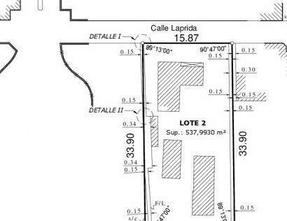
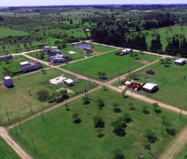

Servicios
Brindamos todos los servicios relacionados con la profesión

Estados Parcelarios
La actualización del Estado Parcelario y la Cédula Catastral son necesarios para cualquier compra-venta de un inmueble.

Amojonamientos
¿Necesita delimitar su propiedad o saber si esta siendo invadido?

Subdivisiones y Loteos
Si posee un terreno de grandes dimensiones y necesita lotearlo, o tiene pensado realizar un emprendimiento inmobiliario de grandes dimensiones.
Mensuras de Posesión / Usurpaciones
¿Compró una propiedad o un terreno y no puede escriturar? ¿ Esta en posesión de un inmueble y quiere escriturarlo a su nombre?

Planos de Propiedad Horizontal
¿Construyó casas dentro de su propiedad y desea venderlas por separado?, ¿Quiere realizar un emprendimiento dentro de su propiedad?